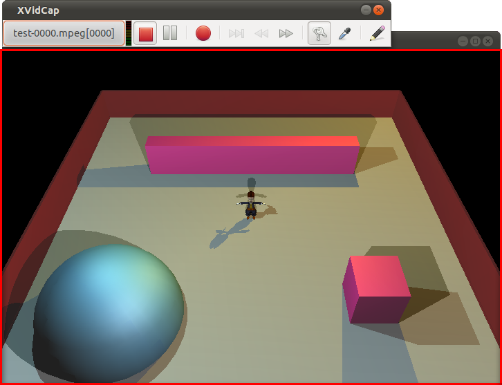
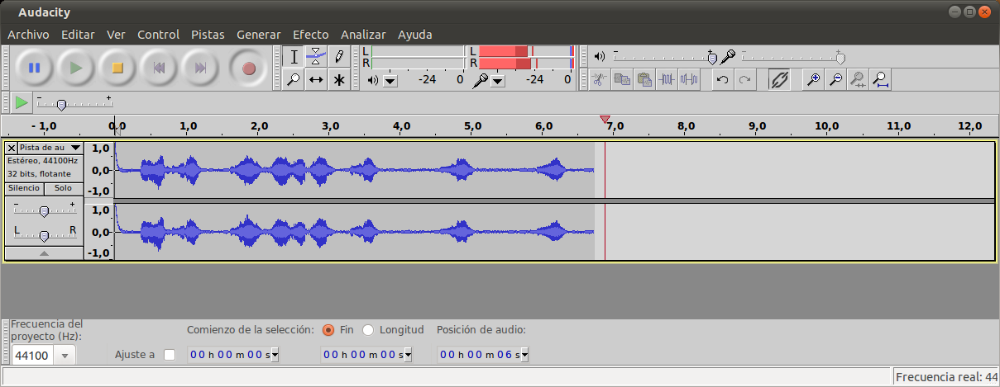
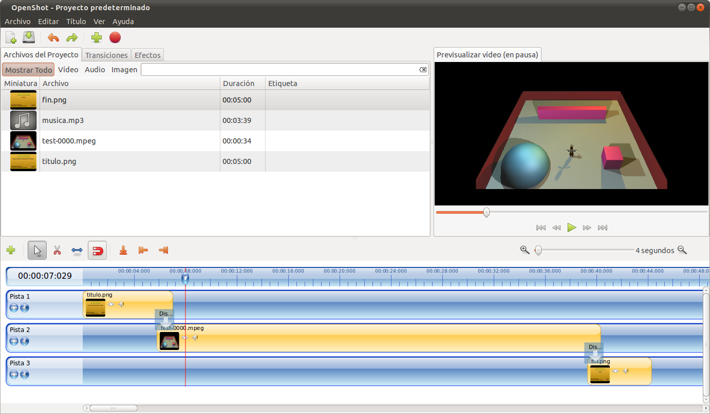

Screencast y edición de vídeo en Linux
Feb 21, 2011 · 3 minute read · CommentsComputing
Muchas veces he querido grabar un vídeo de cualquier proyecto personal (como los que he publicado de Sion Tower) pero siempre he tenido muchos problemas a la hora de hacerlo con Software Libre en mi preciada Ubuntu. Hasta ahora me había visto obligado a recurrir a productos privativos pero por fin he encontrado herramientas libres con la suficiente madurez para conseguir exactamente lo que quiero. En este artículo voy a comentar mi receta de la salvación para hacer un buen screencast.
Screencast con XVidCap
XvidCap es una sencilla aplicación para entornos X Window consistente en una barra con controles de grabación básicos. Podemos grabar el escritorio completo, una porción rectangular o lo que ocurre en una ventana concreta utilizando el selector que incorpora. Dentro de su panel de opciones es posible elegir los cuadros por segundo de grabación así como los codecs de audio y vídeo a emplear.
Su rendimiento es excelente, grabando la demo técnica de Sion Tower a 1280×720 alcanzaba los 15 fps lo cual es suficiente para que se vea fluido. Estuve probando varias configuraciones y lo mejor era seleccionar el formato MPEG y unos fps reducidos de forma que la tasa de aciertos en la captura fuese mayor. La única pega que le encuentro es que no captura el sonido de forma correcta. O bien lo desactivaba o lo único que escuchaba era un ruido insoportable, esto lo solucioné con la siguiente herramienta.

Está en los repositorios de Ubuntu, para instalarlo basta:
sudo apt-get install xvidcap
Grabación de audio con Audacity
Audacity es el software de edición de sonido libre por excelencia, es compatible con infinidad de formatos y permite las operaciones básicas además de otras más avanzadas como la aplicación de efectos.
Antes de comenzar la captura con XVidCap activo la grabación de audio en Audacity de manera que una aplicación se encarga del vídeo y la otra del sonido. Una vez he terminado el vídeo, exporto la grabación a OGG. En post-producción me limito a cortar y sincronizar ambas pistas.

También está en los repos, así que:
sudo apt-get install audacity
Edición de vídeo con OpenShot 1.3
He probado muchísimos editores de vídeo en Linux con resultados cuanto menos decepcionantes: Pitivi, Cinelerra, Kino, Avidemux… Todos ellos han fracasado a la hora de ajustarse a mis necesidades que tampoco son nada del otro mundo. Cuando probé por primera vez la última versión de OpenShot Video Editor mis ojos se abrieron como platos, pues era la respuesta a todas mis plegarias.
OpenShot Video Editor tiene una interfaz extremadamente intuitiva, de hecho, tardé menos de 15 minutos en editar la demo técnica de Sion Tower y dejarla exactamente como yo quería. Sólo tuve dudas al aplicar transiciones y su fantástico manual me lo solucionó al instante. Cuenta con la clásica línea de tiempo sobre la que colocamos a nuestro antojo cualquier combinación de vídeo, audio o imágenes. Permite añadir transiciones, aplicar efectos y configurar multitud de parámetros. A pesar de las posibilidades que ofrece, lo básico queda a la vista y no es necesario bucear por oscuros menús.
Es compatible con Inkscape y Blender (2.5 en adelante) lo que nos permite introducir contenido adicional como carteles y gráficos vectoriales en 2D o 3D. A medida que trabajamos podremos observar el resultado a través de su vista previa. Una vez estemos satisfechos exportaremos el proyecto utilizando cualquiera de la infinidad de perfiles disponibles. Cabe destacar que ofrece la posibilidad de subir el vídeo directamente a YouTube o Vimeo introduciendo nuestras credenciales.
Una maravilla oiga.

La última versión no está en los repositorios y debe ser instalada añadiendo el PPA correspondiente:
sudo add-apt-repository ppa:jonoomph/openshot-edge
sudo apt-get update
sudo apt-get install openshot openshot-doc